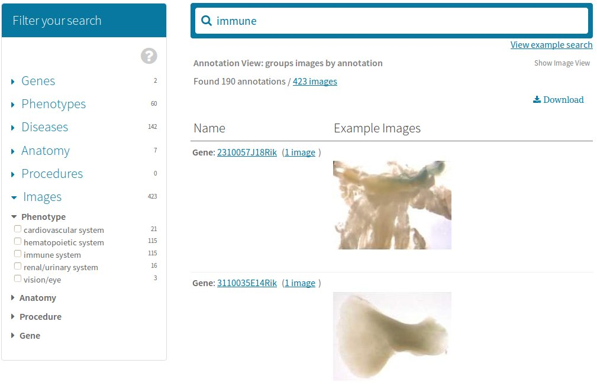

IMPC search page documentation
IMPC search page documentation
Search details
IMPC search page documentationSearch details
Eg. search by gene symbol "akt2":

Eg. search by phenotype "glucose":

Eg. search by parameter "grip strength":

Eg. search by anatomy "eye":
By default, Image View will be displayed, where annotations to an image is enlisted.
Eg. search by phenotype "immune":

To view images grouped by annotations, simply click on the "Show Annotation View" button to the top-right corner of the results grid. The label of the same button will then be switched to "Show Image View" so that you can toggle the views.

 to the top-right corner of the results grid to expand or hide it.
When expanded,
to the top-right corner of the results grid to expand or hide it.
When expanded, 
click on either TSV (tab separated) or XLS (MS Excel) buttons for format of export.
To limit the export data on current page only, choose the buttons of the "Current paginated entries in table",
whereas "All entries in table" will export the whole search results".
A warning message dialog box will be displayed if the dataset is large and download can take longer depending on your network speed.